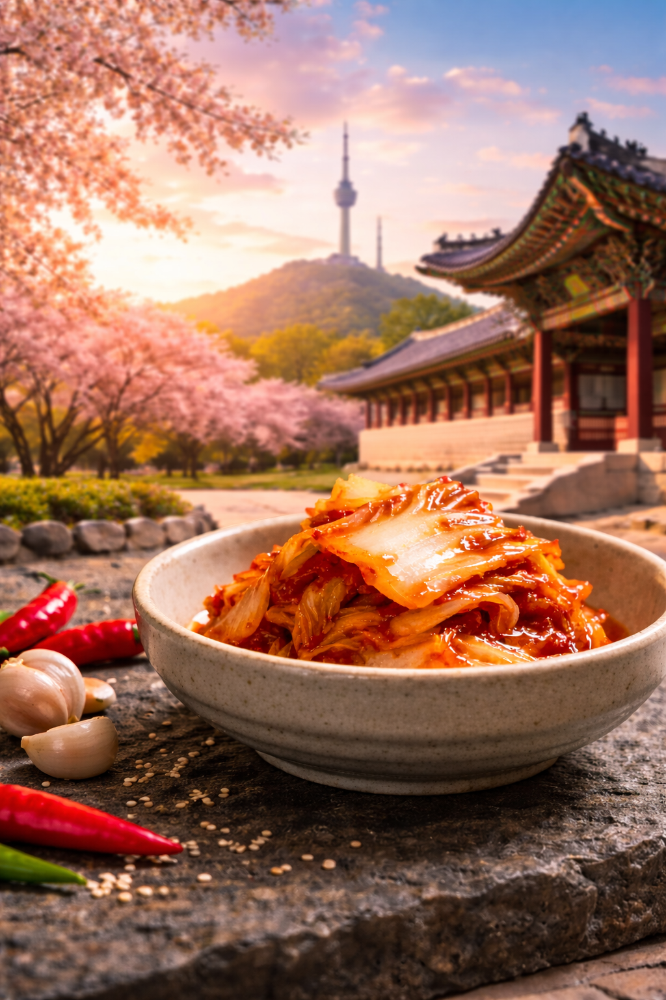
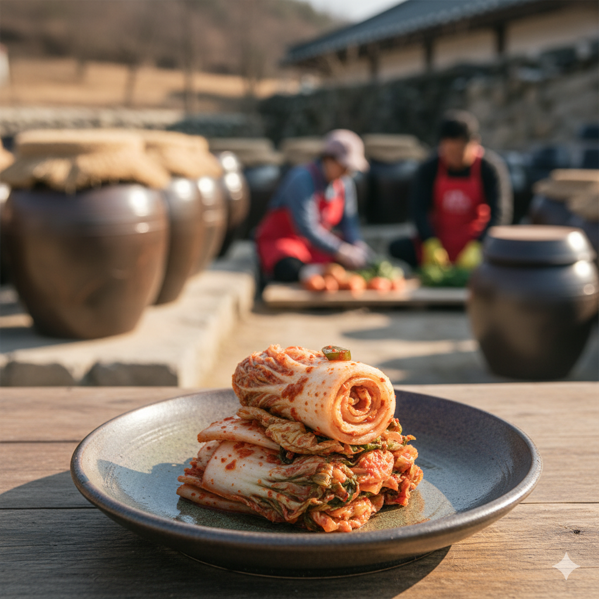

Kimchi adalah makanan tradisional khas Korea Selatan yang telah digemari dan dikenal oleh masyarakat luas. Makanan khas Korea ini merupakan salah satu produk pangan hasil fermentasi sayur-sayuran. Sayur-sayuran yang sering digunakan untuk pembuatan kimchi seperti sawi putih, wortel, dan lobak putih. Ciri khas dari bumbu kimchi yaitu penggunaan bubuk cabai gochugaru khas Korea.
Pada zaman dahulu, kimchi hanya berupa sayur seperti sawi putih yang difermentasi dengan garam agar dapat bertahan lama selama musim dingin yang panjang. Kimchi sudah ada sejak sekitar tahun 37 SM di era tiga kerajaan Korea. Tujuan kimchi pada zaman dahulu hanya satu yaitu mengawetkan sayur untuk jangka waktu yang panjang. Sekarang kimchi dibuat sebagai makanan probiotik yang sehat bagi pencernaan manusia, menambah cita rasa, dan melengkapi gizi.
Kimchi memiliki manfaat yang beragam, karena pemanfaatan mikroorganisme dalam proses fermentasi, membuat kimchi sebagai makanan probiotik yang menyehatkan pencernaan manusia. Selain itu, kimchi memiliki manfaat gizi dan sistem kekebalan tubuh. Selain itu, kimchi juga dapat menjadi makanan bagi orang yang sedang menjalankan diet.
Bagian 1: Persiapan Bahan Potong
1. Pisahkan dan cuci sawi putih, wortel, lobak, dan bawang daun.
2. Kupas wortel dan lobak, lalu potong sawi, bawang daun, wortel, dan lobak.
3. Taburi sawi putih dengan garam, tekan, dan diamkan 30 menit, lalu bilas.
4. Campurkan semua bahan potong hingga merata.
5. Bagi menjadi 2 bagian untuk percobaan.
Bagian 2: Persiapan Saus Kimchi
1. Kupas dan haluskan pear, bawang putih, jahe, gochugaru, dan kecap ikan.
2. Masak campuran air dan tepung hingga mengental.
3. Campurkan dengan bumbu yang sudah dihaluskan.
4. Bagi saus menjadi 2 bagian, lalu tambahkan gula putih pada satu bagian dan gula aren pada bagian lainnya.
Bagian 3: Persiapan Akhir
1. Campurkan bahan potong dengan saus kimchi sesuai jenis gulanya.
2. Masukkan ke dalam toples tertutup.
3. Simpan di tempat yang tidak terkena sinar matahari selama 24 jam.
